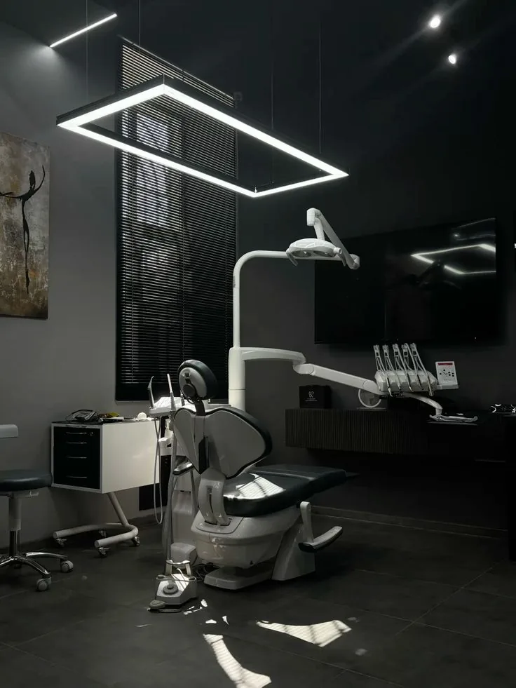
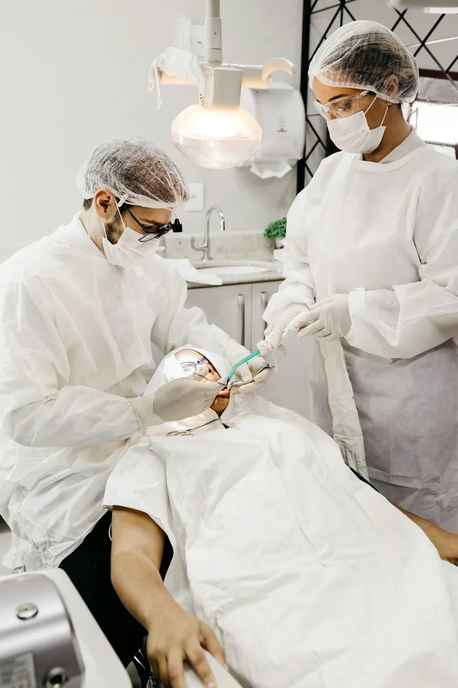

В вашем ритме
Начать со знакомства. Обсудить ожидания. Почувствовать себя спокойно.
Стоматология с вниманием к вам / Алматы
Спокойная атмосфера, точная диагностика и понятный план. Чтобы забота о себе начиналась с доверия.
DENTARA — демонстрационный концепт клиники

01 / Философия
Медицина встречает человечностьУ каждого своя история. Кто-то приходит на привычный осмотр, кто-то решается на первый визит за несколько лет. Здесь для обеих историй есть место.
Мы задумали DENTARA как пространство, где вам объясняют, дают время задать вопросы и вместе выбирают следующий шаг.
Как проходит первый визитНачать со знакомства. Обсудить ожидания. Почувствовать себя спокойно.
Разобраться в вариантах, этапах и стоимости до принятия решения.
Собрать диагностику и пожелания в последовательный план заботы.
02 / Направления заботы
От профилактики до восстановления улыбки. Выберите направление, чтобы узнать больше.
Услуги и цены показаны для демонстрации интерфейса. Это не публичная оферта; индивидуальный план определяет врач.

03 / Пространство
Мягкий свет. Чистые линии. Внимание к деталям. Мы верим: окружение — тоже часть заботы.
Пространство клиники · иллюстративное фото
04 / Осознанный подход
Цифровые инструменты помогают обсуждать лечение наглядно: видеть детали, рассматривать варианты и задавать точные вопросы.
От знакомства к плану
05 / Первый визит
Вам не нужно разбираться во всём заранее. Первый шаг — просто рассказать, что вас волнует.
Обсудим пожелания, прошлый опыт и то, что важно именно вам.
Осмотр и необходимая диагностика помогут разобраться в задаче.
Вместе обсудим варианты, этапы и бюджет. С пространством для вопросов.
06 / Есть вопросы?
Немного ясности
перед первым шагом.
В концепции DENTARA визит начинается со знакомства и обсуждения пожеланий. Врач проводит осмотр, объясняет, нужна ли дополнительная диагностика, и обсуждает возможные следующие шаги.
В разделе услуг показаны демонстрационные ориентиры. В реальной клинике точную стоимость согласуют после осмотра и выбора плана лечения.
Расскажите об этом при записи и на консультации. Обсудите с врачом, что поможет чувствовать себя спокойнее, как будут проходить процедуры и когда можно сделать паузу.
Здесь можно пройти демонстрацию записи. Данные остаются только в открытой форме: сайт не передаёт их клинике и не создаёт реальный приём.
DENTARA — вымышленная клиника. До запуска реального проекта владелец должен добавить подтверждённые адрес, телефон, часы работы и сведения о специалистах.
07 / Ваш следующий шаг
Познакомьтесь с простым сценарием записи.
Без звонков, ожидания и
отправки личных данных.